doYdE
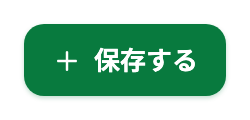
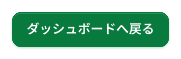
u101P
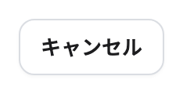

枠 #dadde2→#087a3e
KspUx
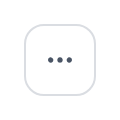
g5Db8
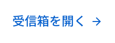
wMMk6
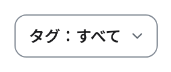
TkVyB
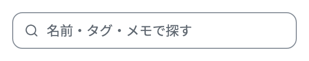
bkjTv
幅 36→40
地 #087a3e→#ffffff
枠 #087a3e→#868e98
dtJVi
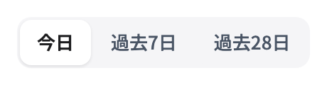
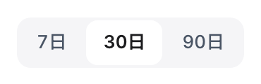
角丸 13.7→0
clV5c
O2fCAt
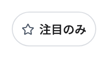
mpVfY
C6DGX
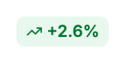
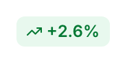
h7Ch3y
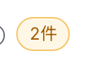
地 #ffffff→#fff7e6
枠 #dadde2→#fef5e3
角丸 5.1→10.2
C9CaMS
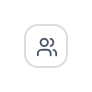
KjC1z
EsjP2
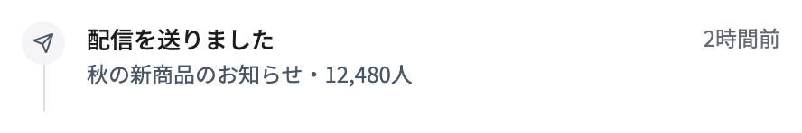
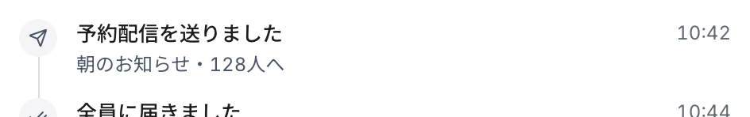
CugIm
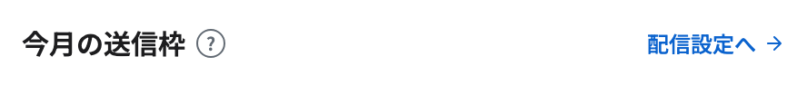
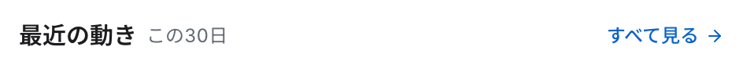
Pp3nS
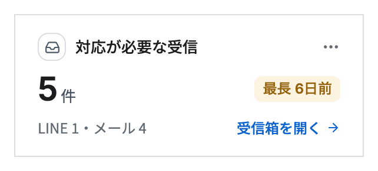
jX2Uw
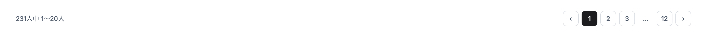
fNPdg
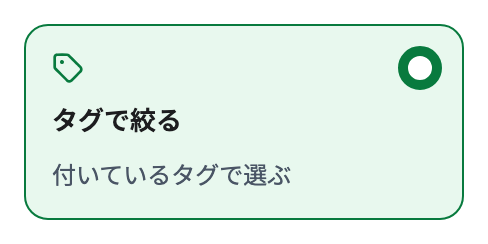
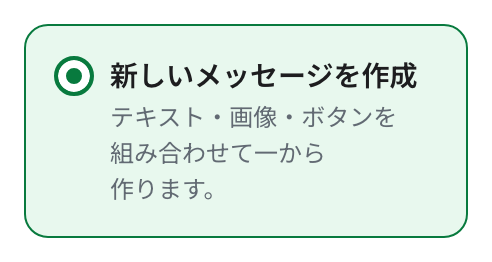
w6uYMd
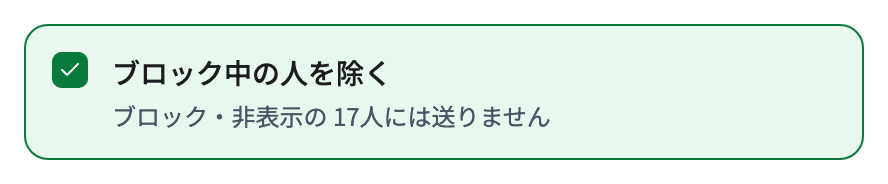
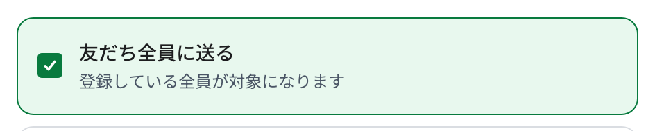
hNXm7
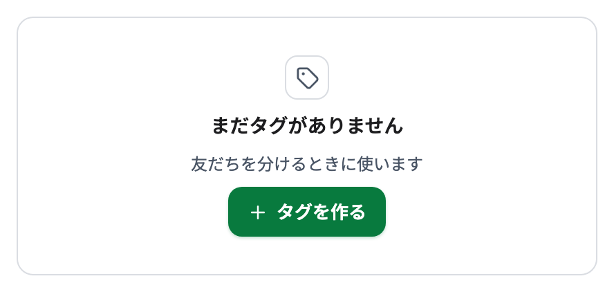
RfHCo
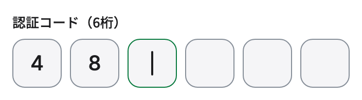
prbOC
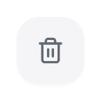
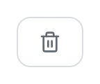
地 #f5f5f7→#ffffff
枠 #f5f5f7→#dadde2
角丸 61.5→10.2
KVkPg
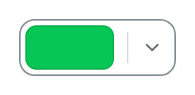
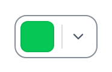